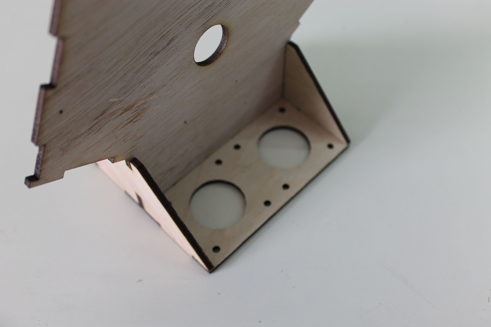
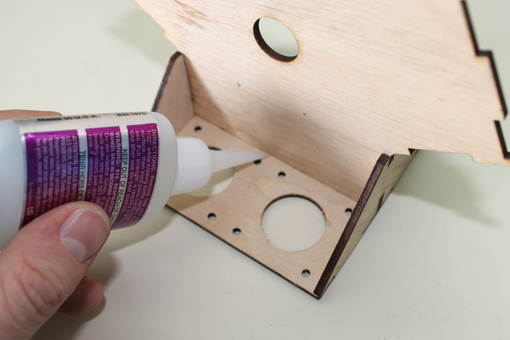
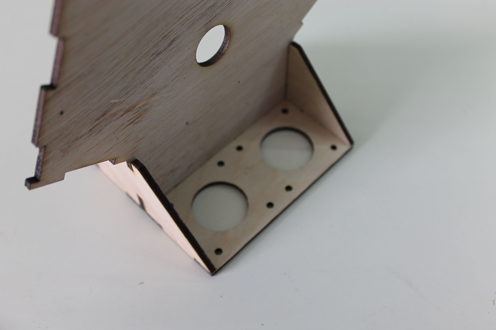
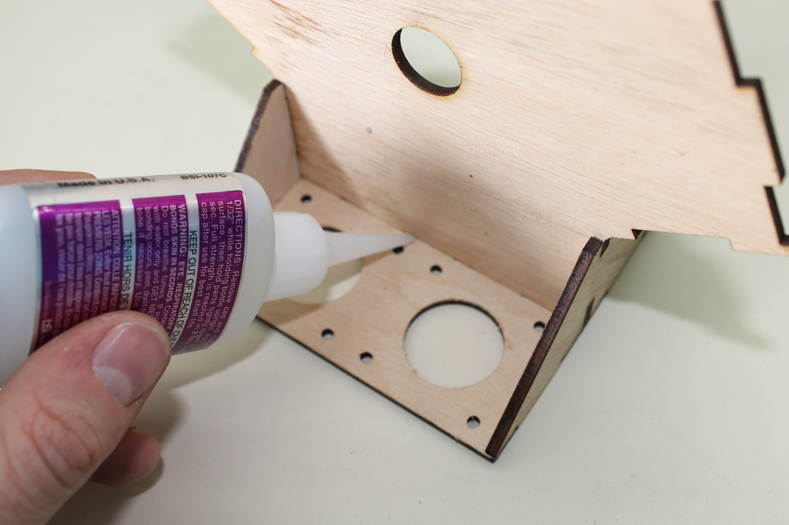

Index
« Prev | Next »
This is the hardest part! Make sure the pieces line up correctly.
Once the glue has dried an M3x15 goes in the hole at the square end and is held in place with an M3 nut.

 


